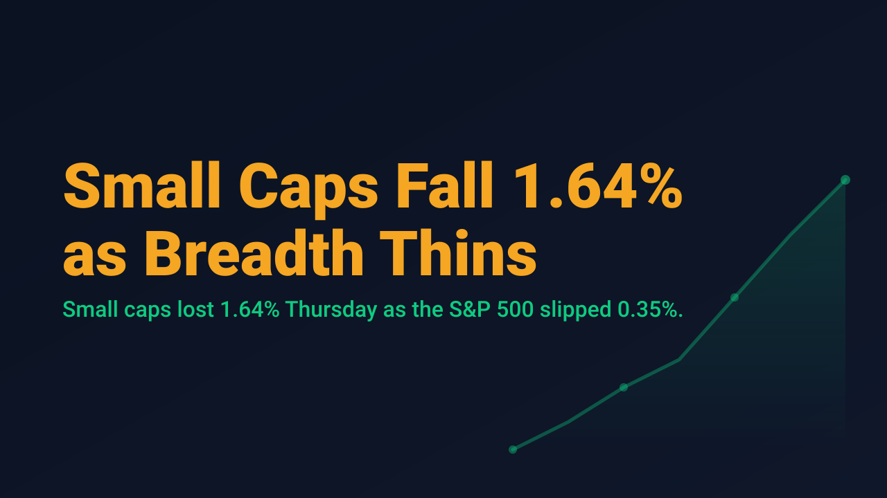
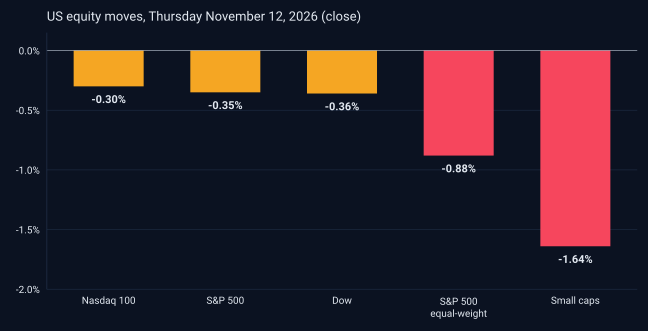

Small Caps Fall 1.64% as Breadth Thins

US equities finished Thursday, November 12, modestly lower on the headline measures, but the damage beneath the surface was larger. The S&P 500 closed at 7,592.40, down 0.35%, and the Nasdaq 100 slipped 0.30% to 28,289.19. The equal-weighted S&P 500 fell 0.88%, and small caps fell 1.64%, according to Saxo's options brief. When the average stock and the smallest companies fall several times faster than the cap-weighted index, the index is describing a narrower market than its level suggests. This note uses Thursday's close and Friday's pre-open readings, because Friday's session had not yet traded at publication.
Sector data pointed the same way. Energy rose 1.5%, while materials fell 1.5%, industrials fell 0.9% and financials fell 0.7%, according to Zacks. December WTI crude traded near $88.54 early Friday, per Cestrian Capital Research. Rates remain the larger pressure. The 10-year Treasury yield was 5.13% at 4:30am Eastern on Friday, below its 5.31% closing high of October 5 but still elevated, while the 1-year yield set a new closing high of 4.65% on November 12. Higher short-term yields are typically most relevant to smaller companies that carry floating-rate debt.

Volatility rose, though not to a stress level. The VIX closed Thursday at 18.70, up 6.92%, and Saxo's one-day volatility gauge jumped 26.50% to 15.99. The Nasdaq 100 closed above its 200-day simple moving average of 28,029.05, a level Cestrian Capital Research described as holding, while the semiconductor ETF SOXX closed $5.25 below its own 200-day average.
Company news added to the cross-currents. Nvidia shares fell more than 4% Thursday after the company announced its CEO would depart, with quarterly results due next week; Saxo's brief puts the options-implied move around that report at about 7.7%. After the close, Cisco reported fiscal second-quarter sales of roughly $18.1 billion, raised full-year guidance, and disclosed order growth of 21% year over year versus 35% in the prior quarter. Applied Materials guided fiscal first-quarter revenue to about $11.10 billion, plus or minus $500 million, against a consensus of $10.89 billion, with semiconductor systems revenue up 64% to $8 billion.
Narrow leadership does not mean an index is about to turn, and one session is a small sample. It does mean that index-level confidence can mislead when the median stock is moving differently. With Nvidia's results due next week and yields elevated, the more useful discipline for swing traders is to size each entry to the risk of the individual setup rather than to the comfort of the headline index.